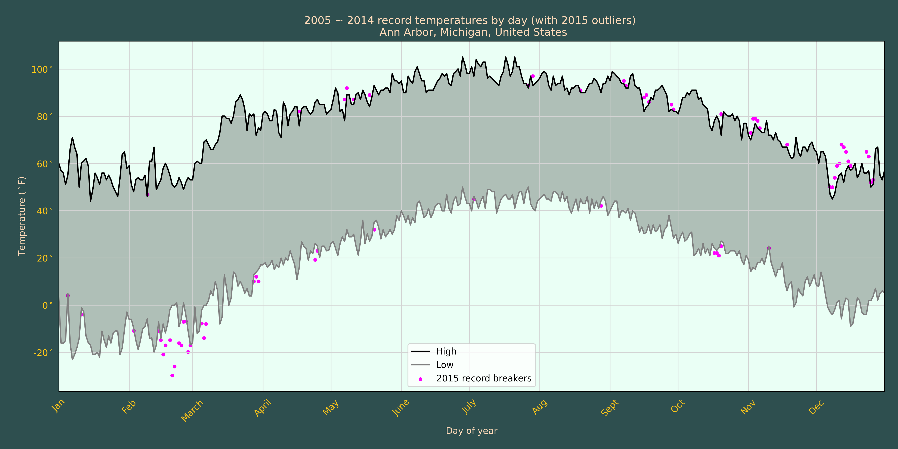

<div class=container>
    <span class="sub-header">
        <div class="t2">Statistical Methodology</div>
    </span>
    <div class="linebreak"></div>
    <div class='summary'>
        &lt;Formulas Here&gt;
    </div>
    <div>
        <span class="sub-header">
            <div class="t2">Analysis</div>
        </span>
        <div class="linebreak"></div>
        <div class='summary'>
            Ann Arbor Michigan Record Temp Comparsion:<br>
            
        </div>

        <span class="sub-header">
            <div class="t2">Public Data</div>
        </span>
        <div class="linebreak"></div>
        <div>
            <mat-list>
                <mat-list-item class="content-list-item">
                    <a href="https://www.ncdc.noaa.gov/">NOAA</a>
                </mat-list-item>
                <mat-list-item class="content-list-item">
                    <a href="https://data.oecd.org/">OECD</a>
                </mat-list-item>
            </mat-list>
        </div>
    </div>
</div>